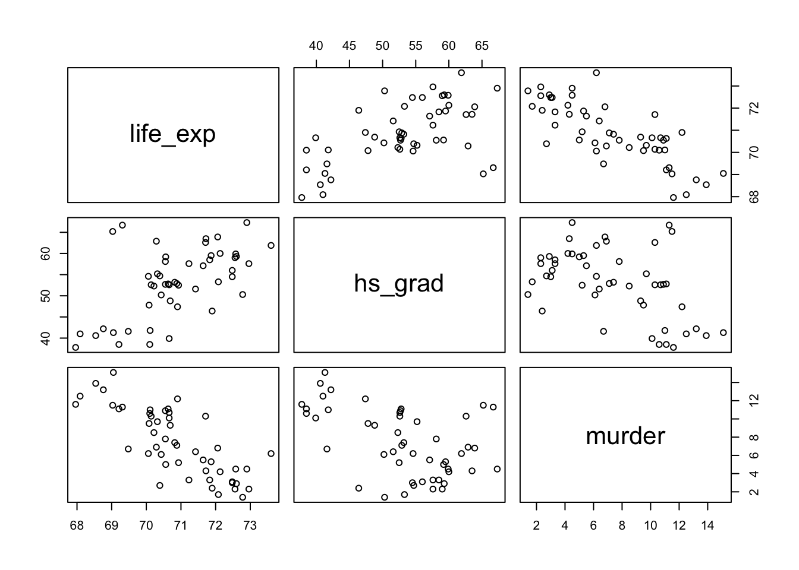
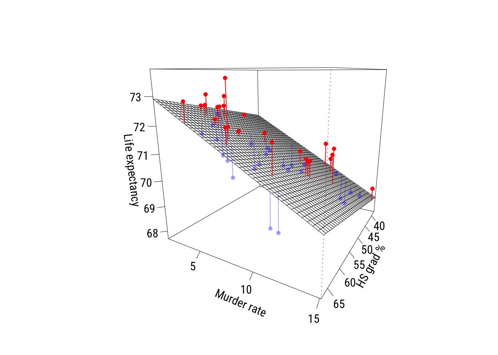
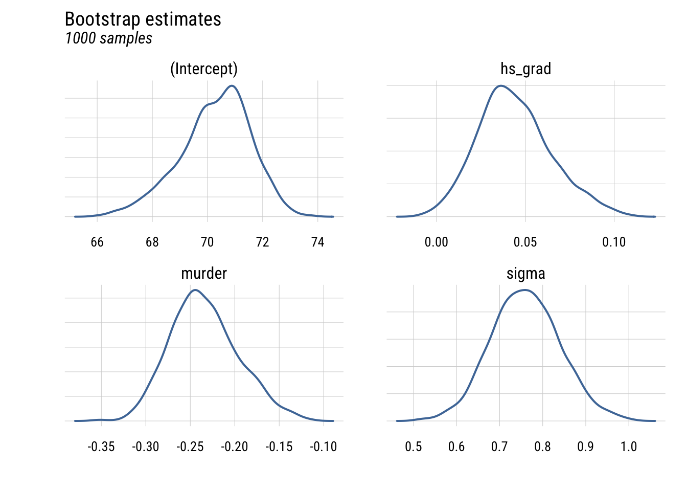
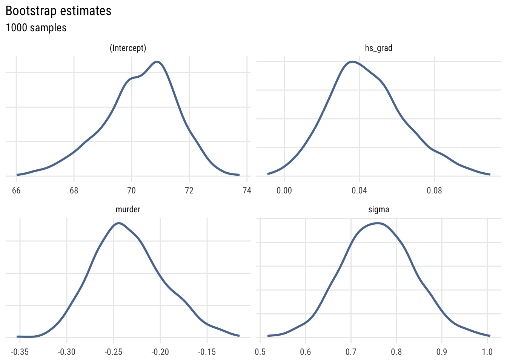

pacman::p_load(dplyr,
tidyr,
broom,
stringr,
modelsummary,
tinyplot,
ggplot2)Chapter 7
Goals
To support the book’s presentation of multiple regression.
Set up
As usual, we’ll set packages and our theme.
tinytheme("ipsum",
family = "Roboto Condensed",
palette.qualitative = "Tableau 10",
palette.sequential = "agSunset")theme_set(
theme_minimal(base_family = "Roboto Condensed") +
theme(panel.grid.minor = element_blank())
)
tableau10 <- c("#5778a4", "#e49444", "#d1615d", "#85b6b2", "#6a9f58",
"#e7ca60", "#a87c9f", "#f1a2a9", "#967662", "#b8b0ac")
options(
ggplot2.discrete.colour = \() scale_color_manual(values = tableau10),
ggplot2.discrete.fill = \() scale_fill_manual(values = tableau10)
)Get the same 50 states data we’ve been using.
state.x77_with_names <- as_tibble(state.x77,
rownames = "state")
states <- bind_cols(state.x77_with_names,
region = state.division) |> # both are in base R
janitor::clean_names() |> # lower case and underscore
mutate(south = as.integer( # make a south dummy
str_detect(as.character(region),
"South")))Multiple regression model
We want to model life_exp as a function of hs_grad and murder (the murder rate per 100,000 population in 1976). We can write the equation this way:
\[ \text{LIFEEXP}_i = \beta_0 + \beta_1(\text{HSGRAD}_i) + \beta_2(\text{MURDER}_i) + \varepsilon_i \]
Or we could write it in the more general notation we saw earlier:
\[\begin{align} \text{LIFEEXP}_i &\sim \mathcal{N}(\mu_i, \sigma) \\ \mu_i &= \beta_0 + \beta_1(\text{HSGRAD}_i) + \beta_2(\text{MURDER}_i) \end{align}\]
Before estimating the model, here’s a quick visualization of the three variables. You can see that all of them are correlated with each other. That is, in the book’s terms, there is at least some redundancy among the predictors.
Show code
# clear theme because pairs() doesn't work with the changes it makes to par()
tinytheme()
# pairs plot
states |>
select(life_exp, hs_grad, murder) |>
pairs()
Show code
# reset the theme
tinytheme("ipsum",
family = "Roboto Condensed",
palette.qualitative = "Tableau 10",
palette.sequential = "agSunset")We can quantify this using a correlation matrix.
states |>
select(life_exp, hs_grad, murder) |>
cor() life_exp hs_grad murder
life_exp 1.0000000 0.5822162 -0.7808458
hs_grad 0.5822162 1.0000000 -0.4879710
murder -0.7808458 -0.4879710 1.0000000These are the Pearson’s \(r\) correlations. What would the PREs/\(R^2\)s be for the separate simple regressions of life expectancy on these predictors?
Estimating parameters in multiple regression
Let’s estimate the two-predictor model.
mod <- lm(life_exp ~ 1 + hs_grad + murder, data = states)
tidy(mod)# A tibble: 3 × 5
term estimate std.error statistic p.value
<chr> <dbl> <dbl> <dbl> <dbl>
1 (Intercept) 70.3 1.02 69.2 5.91e-49
2 hs_grad 0.0439 0.0161 2.72 9.09e- 3
3 murder -0.237 0.0353 -6.72 2.18e- 8glance(mod)# A tibble: 1 × 12
r.squared adj.r.squared sigma statistic p.value df logLik AIC BIC
<dbl> <dbl> <dbl> <dbl> <dbl> <dbl> <dbl> <dbl> <dbl>
1 0.663 0.648 0.796 46.2 8.02e-12 2 -58.0 124. 132.
# ℹ 3 more variables: deviance <dbl>, df.residual <int>, nobs <int>Now here’s a plot. The red points are positive residuals and the blue points are negative residuals1.
1 I got this from ChatGPT 5.2 and made just a few tweaks. I never make these so I really had no idea where to start…
Show code
df <- model.frame(mod)
x <- df$hs_grad
y <- df$murder
z <- df$life_exp
zh <- fitted(mod)
# colors
blue_a <- rgb(0, 0, 1, alpha = 0.35)
red_a <- rgb(1, 0, 0, alpha = 1)
# color by residual sign: red = above plane, blue = below plane
res <- z - zh
cols <- ifelse(res > 0, red_a, ifelse(res < 0, blue_a, "gray40"))
# prediction grid for the plane
gx <- seq(min(x), max(x), length.out = 40)
gy <- seq(min(y), max(y), length.out = 40)
grid <- expand.grid(hs_grad = gx, murder = gy)
Z <- matrix(predict(mod, newdata = grid), nrow = length(gx), ncol = length(gy))
# padding
zlim <- range(c(z, Z), na.rm = TRUE)
pad <- diff(zlim) * 0.05
zlim <- zlim + c(-pad, pad)
# graph
pmat <- persp(
x = gx, y = gy, z = Z,
theta = 120, phi = 15,
zlim = zlim,
xlab = "HS grad %", ylab = "Murder rate", zlab = "Life expectancy",
ticktype = "detailed"
)
# projected points and "sticks"
p_obs <- trans3d(x, y, z, pmat = pmat)
p_fit <- trans3d(x, y, zh, pmat = pmat)
segments(p_fit$x, p_fit$y, p_obs$x, p_obs$y, col = cols, lwd = 1)
points(p_obs, pch = 16, cex = 0.8, col = cols)
Interpreting parameters in multiple regression
The book does a pretty thorough job of explaining how to interpret regression coefficients in the context of multiple regression. I will just point out a few things here.
Getting the language right*
Here is how I might interpret these coefficients:
According to the model, adjusting for the murder rate, each additional percentage point of high school graduation predicts .044 more years of life expectancy.
According to the model ,adjusting for the high school graduation rate, each unit increase in the murder rate per 100,000 predicts .237 fewer years of life expectancy.
A couple of important things are:
- use “adjusting” rather than controlling (the language is, appropriately, weaker)
- avoid causal language and focus on “expectation” and “prediction” conditional on your specific model
Comparing coefficients*
These predictors are on different units. HS graduation is percentages and the murder rate is per 100,000. But it’s also worth pointing out that graduating from high school is (fortunately) more common than being murdered. How could we compare the sizes of these coefficients?
Normalization
Here are the results with x-normalization.
states <- states |>
mutate(hs_grad01 = scales::rescale(hs_grad),
murder01 = scales::rescale(murder))
ma_norm <- lm(life_exp ~ hs_grad01 + murder01, data = states)
tidy(ma_norm)# A tibble: 3 × 5
term estimate std.error statistic p.value
<chr> <dbl> <dbl> <dbl> <dbl>
1 (Intercept) 71.6 0.411 174. 1.01e-67
2 hs_grad01 1.29 0.476 2.72 9.09e- 3
3 murder01 -3.25 0.483 -6.72 2.18e- 8How would you interpret these? Be sure to use the correct units!
Standardization
Here are the results with x-standardization.
states <- states |>
mutate(hs_grad_z = (hs_grad - mean(hs_grad)) / sd(hs_grad),
murder_z = (murder - mean(murder)) / sd(murder))
ma_x_std <- lm(life_exp ~ hs_grad_z + murder_z, data = states)
tidy(ma_x_std)# A tibble: 3 × 5
term estimate std.error statistic p.value
<chr> <dbl> <dbl> <dbl> <dbl>
1 (Intercept) 70.9 0.113 630. 6.26e-94
2 hs_grad_z 0.354 0.130 2.72 9.09e- 3
3 murder_z -0.875 0.130 -6.72 2.18e- 8Interpret these. Be sure to use the correct units!
Here are the results with full standardization.
states <- states |>
mutate(life_exp_z = (life_exp - mean(life_exp)) / sd(life_exp))
ma_full_std <- lm(life_exp_z ~ hs_grad_z + murder_z, data = states)
tidy(ma_full_std) |>
# this is to deal with an annoying scientific notation issue
mutate(across(where(is.numeric), ~ round(.x, 4))) # A tibble: 3 × 5
term estimate std.error statistic p.value
<chr> <dbl> <dbl> <dbl> <dbl>
1 (Intercept) 0 0.0838 0 1
2 hs_grad_z 0.264 0.097 2.72 0.0091
3 murder_z -0.652 0.097 -6.72 0 These can be considered partial correlations as well as partial regression coefficients.
More intuition*
How does multiple regression work? We can build a two-predictor multiple regression out of a series of simple regressions2.
2 This is sometimes referred to as the Frisch-Waugh-Lovell theorem but it looks like first credit for this to Udny Yule in 1907.
Here it is for hs_grad:
# y residualized on murder
ry <- resid(lm(life_exp ~ murder, data = states))
# hs_grad residualized on murder
rx <- resid(lm(hs_grad ~ murder, data = states))
# simple regression of residuals
b_hs_manual <- coef(lm(ry ~ rx))[2]
b_hs_manual rx
0.0438873 You can confirm this is the same as \(b_1\) for hs_grad estimated above.
Now for murder:
ry <- resid(lm(life_exp ~ hs_grad, data = states))
rx <- resid(lm(murder ~ hs_grad, data = states))
b_murder_manual <- coef(lm(ry ~ rx))[2]
b_murder_manual rx
-0.2370901 You can confirm this is the same as \(b_2\) for murder estimated above.
This two-step procedure should give you some sense of what we mean when we talk about “adjustment”; we are pulling the influence of a third variable3 out of the relationship with the other two and then estimating a “simple” regression on those adjusted variables.
3 We’re usually (as in this case) “pulling it out” under the assumption that the relationships between that third variable and the other two are linear.
Statistical inference in multiple regression
There’s not much to add here conceptually beyond what we did for simple regression and what’s already in the book. But I’ll add a couple of things here.
Bootstrapping*
We can use bootstrapping to demonstrate how sample size and sampling variability affect the precision of our parameter estimates.
# get function that spits out estimates
get_parameter_estimates <- function(formula, data) {
## estimate model
fit <- lm(formula = formula, data = data)
## extract and name sigma
s <- sigma(fit)
names(s) <- "sigma"
## put together all params
params <- c(coef(fit), s)
## return them
return(params)
}
# create skeleton and iterate with resampling
myboots <- tibble(sim_id = 1:1000) |>
rowwise() |>
mutate(params = list(get_parameter_estimates(
formula = life_exp ~ hs_grad + murder,
data = slice_sample(states,
n = 50,
replace = TRUE)))) |>
unnest_longer(params,
values_to = "value",
indices_to = "term")This is the data structure we have.
print(myboots, n = 8)# A tibble: 4,000 × 3
sim_id value term
<int> <dbl> <chr>
1 1 71.3 (Intercept)
2 1 0.0257 hs_grad
3 1 -0.256 murder
4 1 0.855 sigma
5 2 71.2 (Intercept)
6 2 0.0304 hs_grad
7 2 -0.238 murder
8 2 0.826 sigma
# ℹ 3,992 more rowsWe can plot the four parameters using density plots.
Show code
plt(~ value,
data = myboots,
main = "Bootstrap estimates",
sub = "1000 samples",
facet = term,
facet.args = list(free = TRUE),
type = type_density(joint.bw = "none"),
yaxt = "n",
ylab = "",
xlab = "",
lw = 2)
Show code
ggplot(myboots, aes(x = value)) +
geom_density(linewidth = 1, color = tableau10[1]) +
facet_wrap(~term, scales = "free") +
labs(
title = "Bootstrap estimates",
subtitle = "1000 samples",
x = NULL, y = NULL) +
theme(axis.text.y = element_blank(), axis.ticks.y = element_blank())
This shows the uncertainty in the estimates across the bootstrap samples.